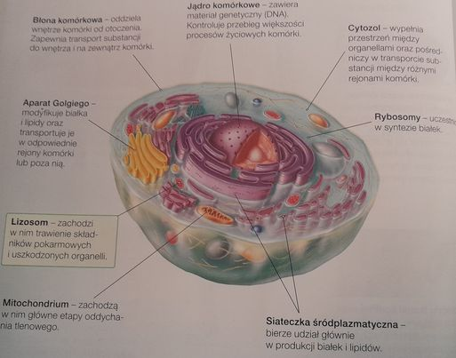
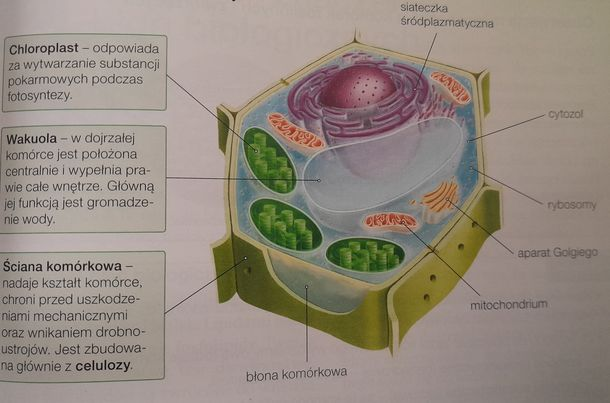

Komórka to podstawowa jednostka struk turalna wszystkich organizmów,
zdolna do wykonywania czynności życiowych. W przy. rodzie spotykamy
zarówno organizmy jedno komórkowe, np. bakterie, jak i organizmy wielokomórkowe,
które podobnie jak czło mogą być zbudowane nawet z bilionów komórek.
Rodzaje komórek
Jednym z podstawowych kryteriów podziału komórek jest podział ze względu na wystę
powanie jądra komórkowego lub jego brak. Na jego podstawie wyróżniamy dwa główne
rodzaje komórek:
▸komórki prokariotyczne - są to komórki bezjądrowe.
Ich material genetyczny (DNA) jest ułożony luźno w cytozolu;
▸komórki eukariotyczne - są to komórki, które mają jądro komórkowe,
stąd ich druga nazwa - komórki jądrowe. Jądro komórkowe zawiera większość DNA komórki.
Komórkami prokariotycznymi są komórki bakterii, natomiast komórki
eukariotyczne to komórki zwierzęce, roślinne i grzybowe.
Kształt i wielkość komórek eukariotycznych
Komórki eukariotyczne mogą mieć owalny, wydłużony, sześcienny lub gwiazdkowaty kształt.
Różnią się także wielkością. Więk szość z nich ma wielkość kilku mikrometrów,
jednak największe komórki zwierzęce, np. komórki nerwowe i włókna mięśniowe,
a także włókna niektórych roślin, osiągają nawet kilkadziesiąt centymetrów długości
Zarówno kształt, jak i wielkość komórki zależy od jej funkcji.
Komórki i ich funkcje
Komórki nerwowe mają wydłużony kształt oraz liczne wypustki.
Umożliwia im to kontakt z innymi komórkami szybkie przekazywanie informacj
Krwinki czerwone to małe, okrągłe i spłaszczone komórki, które nie mają jądra.
Ich kształt i wielkość ułatwiają im przeciskanie się w drobnych naczyniach krwionośnych.
Wypełnione są hemoglobiną, dzięki czemu transportują tlen.
Komórki tkanki kostnej mają liczne wypustki, które umożliwiają wymianę substancji odżywczych
między naczyniami krwionośnymi a komórkami tkanki kostnej.
Pręciki to komórki siatkówki. Mają one podłużny kształt i zawierają światłoczułe barwniki,
które pozwalają na odbiór bodźców świetlnych z otoczenia.
Włókna mięśnia szkieletowego są długie i poprzecznie prążkowane. Prążkowanie wynika z naprzemiennego
ułożenia białek, dzięki którym mięśnie mogą się kurczyć.
Plemniki są męskimi komór kami rozrodczymi o opływo wym kształcie. Mają wić, dzięki której mogą
przemieszczać się w kierunku komórki jajowej.
Rodzaje komórek



Budowa i znaczenie błon biologicznych
Budowa błon biologicznych
Blony biologiczne są zbudowane przede wszystkim z lipidów i białek.
Lipidami budu jącymi blony są głównie fosfolipidy. Tworzą one podwójną warstwę,
tzw. dwuwarstwę. Ogony fosfolipidów są zwrócone do wnętrza dwuwarstwy, a głowy-w
stronę wodnych roztworów.
Białka budujące błony mogą być połą czone tylko z jedną
warstwą lipidów lub mogą przechodzić przez obie warstwy
Właściwości blony biologicznej
Dzięki swojej budowie blona biologiczna jest selektywnie przepuszczalna.
Oznacza to, że przepuszcza tylko niektóre substancje.
Kolejną cechą błony jest jej asymetryez ność. Wynika ona z tego, że warstwy
błony różnią się występującymi w nich lipidami i bialkami. Jeżeli przyjrzysz
się zamieszczo nej poniżej Ilustracji, zobaczysz, ze warstwa blony skierowana
do środowiska zewnętrz nego różni się od warstwy błony skierowanej do cytozolu
np. obecnością płaszcza węglo wodanowego.
Błona biologiczna jest również półpłynna, ponieważ tworzące ją elementy nieustannie
przemieszczają się względem siebie
Funkcje blon biologicznych
Blony biologiczne pelnią w komórce m.in. następujące funkcje:
► tworzą barierę ochronną oddzielająca wnętrze komórki od środowiska zewnętrz nego
► pośredniczą w transporcie substancji oraz kontrolują przepływ substancji pomiędzy
wnętrzem komórki a środowi skiem zewnętrznym
► tworzą przedzialy dzięki czemu w komórce mogą zachodzić
jednocześnie różne, często przeciwstawne procesy
► odbierają ze środowiska zewnętrznego sygnaly (m.in. chemiczne, elektryczne lub mechaniczne),
które mogą wpływać na funkcjonowanie komórki.
Rodzaje transportu przez błony
Jednym z kryteriów podziału transportu przez błony jest podział ze względu na nakład energii.
Na podstawie tego kryterium wyróżniamy:
▷ transport bierny (pasywny) - odbywa się on ze środowiska o większym stężeniu substancji rozpuszczonych
do środowiska o ich mniejszym stężeniu, czyli zgodnie z różnicą stężeń. Dlatego nie wymaga nakładu
energii. Kiedy transport ten zacho dzi bezpośrednio przez błonę, nazywamy go dyfuzją prostą,
a kiedy zachodzi z udziałem białek błonowych - dyfuzją ułatwioną
▷ transport czynny (aktywny) - odbywa się on ze środowiska o mniejszym stężeniu substancji
rozpuszczonych do środowiska o ich większym stężeniu, czyli wbrew róż nicy stężeń.
Dlatego wymaga nakładu energii, np. w postaci ATP (zob. s. 109). W transporcie czynnym
zawsze uczestni czą białka błonowe
Dyfuzja prosta
Dyfuzją prostą nazywamy swobodne prze nikanie substancji przez błonę biologiczną.
W ten sposób transportowane są małe czą steczki, takie jak tlen (O₂) i dwutlenek
węgla (CO₂)
Rodzajem dyfuzji prostej jest osmoza. Polega ona na tym, że przez błonę prze mieszczają się cząsteczki wody
Dyfuzja ułatwiona
Dyfuzja ułatwiona zachodzi wtedy, gdy czą steczki są przenoszone biernie, ale
z udzia lem transportujących białek błonowych. Za jej pomocą do wnętrza komórek
wnika większość związków chemicznych potrzeb nych im do życia, m.in. cukry proste
(np. glukoza) i aminokwasy. Również produkty przemiany materii opuszczają komórki
głównie za pomocą dyfuzji ułatwionej
Transport czynny (aktywny)
Transport czynny zachodzi wbrew różnicy stężeń. Dlatego wiąże się ze zużyciem
energii (w postaci ATP) i z obecnością białek trans portujących. Przykładem takiego
białka jest pompa protonowa w błonie lizosomów. Trans portuje ona protony H+ z
cytozolu do wnętrza lizosomu. Pozwala to utrzymać w lizosomie kwaśny odczyn niezbędny
dla działania wystę pujących w nim enzymów trawiennych
Osmoza w komórkach zwierzęcych i roślinnych
Jak wiesz, w wyniku osmozy cząsteczki wody przemieszczają się biernie z roztworu o
niższym stężeniu do roztworu o wyższym stężeniu. Roztwór o stężeniu substancji wyższym
niż wewnątrz komórki nazywamy roztworem hipertonicznym. Roztwór o stężeniu substancji
niższym niż w komórce to roztwór hipotoniczny, a o stężeniu równym - izotoniczny
Jeżeli umieścimy komórkę zwierzęcą i roślinną w takim samym roztworze, zacho wają
się one odmiennie. Dlaczego? Ponieważ komórka roślinna ma sztywną ścianę komór kową
i położoną centralnie wakuolę, która gromadzi wodę. Na ilustracjach możesz prześledzić,
jak zachowują się komórki zwierzęce (czerwone krwinki) i roślinne w różnych roztworach.
Stężenie roztworu na zewnątrz komórki oznaczyliśmy jako S1, a wewnątrz komórki - jako S2
Funkcje jądra komórkowego
Najważniejsze funkcje jądra komórkowego to: ▸ kontrolowanie większości procesów
zachodzących w komórce przez syntezę RNA na podstawie informacji zapisanej w DNA
▸ przekazywanie materialu genetycznego, czyli DNA do komórek potomnych.
Pierwszą z tych funkcji jądro może pełnić dzięki swojemu głównemu składnikowi - DNA.
Ten kwas nukleinowy zawiera infor macje o budowie cząsteczek RNA i białek.
Oznacza to, że sekwencja nukleotydów w DNA wyznacza sekwencję nukleotydów w RNA, co z
kolei umożliwia syntezę białek. W różnych komórkach czynne są różne geny, dlatego np.
komórki skóry człowieka różnią się budową i funkcjami od komórek wątroby. Białka z
kolei odpowiadają za meta bolizm komórki. Dzięki drugiej funkcji jądra oraz replikacji
DNA komórki, które powstają po podziale komórkowym, zawierają taki sam material
genetyczny jak komórka rodzicielska
Budowa jądra komórkowego
Jądro komórkowe jest otoczone dwiema blo nami, które tworzą otoczkę jądrową.
Reguluje ona transport RNA do cytozolu oraz transport białek do i z jądra komórkowego.
Transport odbywa się przez znajdujące się w otoczce otwory nazywane porami jądrowymi.
Wnę trze jądra komórkowego jest wypełnione chro matyną. Częścią chromatyny jest jąderko.
Jest to obszar, gdzie zachodzi intensywna produk cja cząsteczek rRNA, które są niezbędnymi
składnikami rybosomów
Składki cytoplazmy
Cytozol
Cytozol to półpłynny składnik cytoplazmy. Jest on niejednorodną, galaretowatą sub stancją,
która wypełnia przestrzeń między organellami
W skład cytozolu wchodzi woda wraz z rozpuszczonymi lub zawieszonymi w niej substancjami
nieorganicznymi, takimi jak jony magnezu i wapnia, oraz związkami or ganicznymi, przede
wszystkim białkami
W komórce cytozol pełni m.in. następu jące funkcje:
▸ stanowi środowisko, w którym zachodzą różne reakcje biochemiczne pośredniczy w transporcie
substancji między organellami oraz między organel lami a środowiskiem zewnętrznym komórki
W cytozolu znajduje się cytoszkielet, czy li skomplikowana sieć włókien białkowych.
Cytoszkielet zapewnia komórce wytrzyma łość, m.in. zapobiega jej pękaniu w wyniku
rozciągania, oraz pomaga utrzymać właści wy kształt. Jednocześnie dzięki niemu komórki
mogą zmieniać kształt i poruszać się ruchem pełzakowatym (tak poruszają się np. makrofagi).
Cytoszkielet umożliwia również przemieszczanie się chromosomów podczas podziału komórki.
Buduje też takie struktu ry, jak rzęski i wici (np. rzęski nabłonka dróg oddechowych i wić plemnika)
Siateczka śródplazmatyczna - zakłady produkcji białek i lipidów
Siateczka śródplazmatyczna składa się z błon biologicznych mających postać spłaszczonych woreczków
rozgałęziających się kanalików. Wyróżniamy dwa rodzaje siateczki. Są to:
• siateczka śródplazmatyczna szorstka (z rybo somami)-odpowiada ona za wytwarzanie
białek kierowanych poza komórkę, a także białek potrzebnych komórce - enzymów lizosomów
i wakuol oraz składników błon
• siateczka śródplazmatyczna gładka (bez rybosomów) - produkuje ona lipidy,
neutralizuje trujące związki oraz magazynuje jony wapnia
Rybosomy - fabryki białek
Rybosomy to niewielkie struktury, których zadaniem jest synteza białek według instrukcji
zawartej w sekwencji RNA. Rybosomy nie są otoczone błoną biologiczną, ale współpracują z
systemem blon wewnątrzkomórkowych. Składają się one z dwóch podjednostek - dużej i małej
zbudowanych z białka oraz rybosomowego RNA (rRNA). Rybosomy mogą być połączone z błonami
siateczki śródplazmatycznej lub występować w cytozolu, mitochondriach I chloroplastach.
Rybosomy znajdujące się w mito chondriach chloroplastach mają jednak inną budowę i nigdy
nie opuszczają tych organelli
Wakuola - magazyn wody
Wakuola to pęcherzyk wypełniony płynem. W komór kach roslinnych zadaniem wakuoli jest m.in.
gromadzenie wody i utrzymywanie odpowiedniego uwodnienia komórek, magazynowanie różnych
substancji, np. białek zapasowych, ubocznych produktów przemiany materii, barwników oraz
związków takich jak kofeina czy nikotyna
W komórkach roślinnych występuje zwykle jedna, duża, centralnie położona wakuola,
której błonę nazywamy tonoplastem
W komórkach grzybowych wakuole są mniejsze i liczniejsze niż w komórkach roślinnych.
Ich funkcje to m.in. pochłanianie, trawienie oraz usuwanie z komórki różnych substancji
Aparat Golgiego - przedsiębiorstwo transportowe
Aparat Golgiego to system spłaszczonych woreczków nazywanych cysternami.
Trafiają do nich lipidy białka wyprodukowane w siateczce śródplazmatycznej.
Tutaj są one modyfikowane, Następnie są przenoszone w pęcherzykach odrywających
się od aparatu Golgiego np. na zewnątrz komórki (m.in. hormony) czy do wnętrza
organelli (np. enzymy trawienne lizosomów)
Lizosomy - zakłady usuwania śmieci
Lizosomy mają postać niewielkich pecherzykow ich wnetrze jest wycenione enzymami
trawiennymi, które rozdada nie tylko dute cząstects agres lecz także uszkodzone
organelle Lizosomy występu w kombac zwierzęcych
Do czego jest potrzebny system blon wewnątrzkomórkowych?
System blon wewnątrzomorsowych umatiwa strukturom komorowym sprawną komunikacje
za pomoca pęcherzyków transportujacych Dogs temo np. biasa, które powstają na
rybosomach siateczki seddplazmatycmes, trafa min. do lizosomówi wakuol lub poza komorkę
Mitochondrium- elektrownia komórki
W mitochondriach zachodzą główne etapy oddychania tlenowego. Energia uwolniona w tym
procesie jest gromadzona w związku o nazwie ATP (adenozynotrifosforan).
Mitochondrium ma dwie błony, pomiędzy którymi znajduje się niewielka przestrzeń.
Błona zewnętrzna mitochondrium jest gładka. Błona wewnętrzna jest pofałdowa na i
tworzy charakterystyczne wpuklenia grzebienie mitochondrialne. Obszar mito chondrium
ograniczony przez wewnętrzną błonę jest wypełniony substancją zwaną matrix. Zawiera ona
białka enzymatyczne, rybosomy oraz koliste cząsteczki DNA
Cykl komórkowy
Czym jest cykl komórkowy?
Cykl komórkowy to ogół procesów, które za chodzą od powstania
komórki do jej podziału na dwie komórki potomne
Cykl komórkowy przebiega w dwóch eta pach. Są to:
▸ etap interfazy, czyli okres między podziałami , w czasie którego komórka zwiększa
swoje rozmiary, gromadzi materiały zapa sowe i powiela organelle komórkowe, a także
zachodzi replikacja DNA. Interfaza dzieli się na trzy fazy: G₁, Si G₂
▸ etap podziału komórki (faza M), podczas którego następuje podział jądra komórkowego
i podział cytoplazmy. Podział jądra zachodzący w cyklu komórkowym nazywamy mitozą
Etap I: interfaza
Wraz z powstaniem nowej komórki zaczy na się jej cykl komórkowy.
Jego pierwszym etapem jest interfaza. Rozpoczyna się ona fazą G₁,
w której komórka rośnie. Powstają wtedy nowe organelle komórkowe,
są gro madzone cząsteczki pokarmowe i wytwa rzane wszystkie białka
niezbędne do funk cjonowania komórki, np. enzymy potrzebne do replikacji DNA
Niektóre komórki w fazie G, nie przygo towują się do kolejnego podziału,
lecz spe cjalizują się w komórki określonego typu, np. komórki nerwowe.
Przechodzą one wtedy do fazy Go, którą nazywamy też fazą spo czynkową.
Oznacza to wyjście komórki z cy klu. Niekiedy komórki z fazy G, mogą wrócić do cyklu,
np. pod wpływem hormonów
Kolejną fazą jest faza S. W jej trakcie dochodzi do podwojenia zawartości DNA w jądrze
komórkowym w procesie replikacji. Zachodzi również synteza histonów
Ostatnim etapem interfazy jest faza G₂ w której komórka przygotowuje się do po działu.
Zachodzi wtedy synteza pozostałych białek (oprócz histonów) niezbędnych do tego procesu
Etap II: podział komórki
Po interfazie następuje etap podziału komór ki, nazywamy faza M.
Składa się on z dwóch części: podziału jądra komórkowego oraz podziału cytoplazmy.
Najważniejszym etapem podziału jądra, czyli mitozy, jest rozdzielenie chromosomów.
W efekcie tego procesu powstają dwa jądra potomne o takiej samej zawartości DNA.
Po podziale jądra ko mórkowego następuje podział cytoplazmy (cytokineza), czyli
rozdzielenie cytozolu oraz organelli do dwóch komórek potomnych
Znaczenie mitozy, mejozy i apoptozy
Czym są mitoza i mejoza?
Mitoza to podział jądra komórkowego. w którego wyniku z jednej komórki rodziciel
skiej powstają dwie komórki potomne o ta kiej samej liczbie chromosomów, co komórka
rodzicielska. Mitoza zachodzi w komórkach tworzących ciało organizmów i odpowiada m.in.
za ich wzrost
Mejoza to podział jądra komórkowego, w którego wyniku z jednej komórki rodziciel skiej powstają
cztery komórki potomne ozre dukowanej o połowę liczbie chromosomów
Aby zrozumieć, na czym polega róźnica między mitozą a mejozą, przypomnij sobie,
czym są komórki diploidalne i haploidalne. Komórki diploidalne, które oznaczamy jako 2n,
mają w jądrze komórkowym podwójny zestaw chromosomów (jeden zestaw od ojca, a drugi od
matki). Przykładami takich komó rek są komórki somatyczne, czyli tworzące ciało.
Komórki haploidalne (1n) mają w ją drze komórkowym pojedynczy zestaw chro mosomów.
Przykładami komórek haploidal nych są gamety zwierząt - komórki jajowe i plemniki
Mejoza a rozmnażanie płciowe
Większość organizmów to organizmy diplo idalne, które mają haploidalne gamety Jak wiesz,
redukcja o połowę liczby chromosomów w gametach jest możliwa dzięki mejozie.
Mejoza zwiększa również różnorodność cech u organizmów potomnych. Jak do tego dochodzi?
Otóż za dziedziczenie cech są odpowiedzialne geny, które są ułożone na chromosomach
liniowo. W czasie mejozy chromosomy homologiczne wymieniają się odcinkami DNA, a co za
tym idzie - genami. Połączenie dwóch gamet podczas zapłodnie nia odtwarza dwa komplety
chromosomów w komórkach, ale potomstwo różni się od ro dziców, ponieważ dziedziczy różne
warianty genów w różnych kombinacjach. Większe zróżnicowanie osobników sprawia, że nawet
przy zmieniających się warunkach środo wiska część z nich będzie mogła przetrwać i
przekazać geny organizmom potomnym. Rozmnażanie płciowe oraz wytwarzanie ha ploidalnych
gamet jest więc ważnym przysto sowaniem ewolucyjnym organizmów
Znaczenie mitozy
Wzrost całego organi zmu oraz jego części
Mitoza umożliwia zmianę rozmiarów naszego ciała w okresie dzieciństwa i dojrzewania, a także
wydłużanie się naszych włosów i paznokc
Wytwarzanie nowych komórek ciała
W wyniku mitozy powstają np. komórki naskórka, ktörego zewnętrzna,
zrogowaciała warstwa stale się złuszcza
Rozmnażanie bezpłciowe organizmów
Dzięki mitozie np. truskawka rozmnaża się przez rozłogi
Regeneracja uszkodzonych tkanek
Mitoza umożliwia gojenie się ran
Znaczenie majozy
Rozmnażanie płciowe
Mejoza umożliwia rozmnażanie płciowe zwierząt, w tym człowieka. Gamety,
każda z innym zestawem genów, łączą się losowo w procesie zapłodnienia,
dlatego każdy z nas ma unikalny zestaw genów
Zróżnicowanie genetyczne osobników tego samego gatunku
Mejoza prowadzi do zróżnicowania genetycznego m.in. naszego gatunku.
Duże zróżnicowanie zwiększa szansę na przetrwanie gatunku, ponieważ
mniejsze jest wtedy prawdopodobień stwo wystąpienia chorób genetycz nych,
a większe pojawienia się nowych, korzystnych cech
Przekazywanie informacji genetycznej
Dzięki mejozie możemy odziedziczyć pewne - ale nie wszystkie cechy rodziców i dziadków.